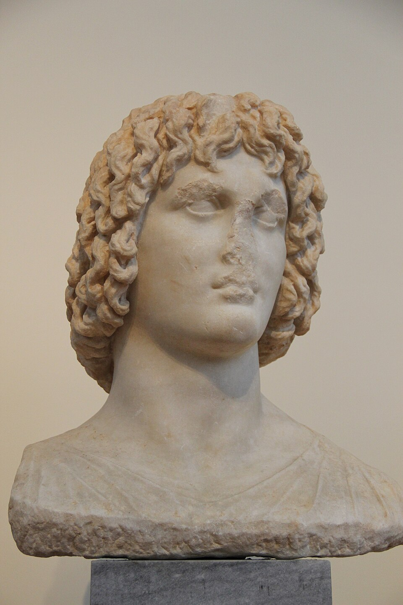
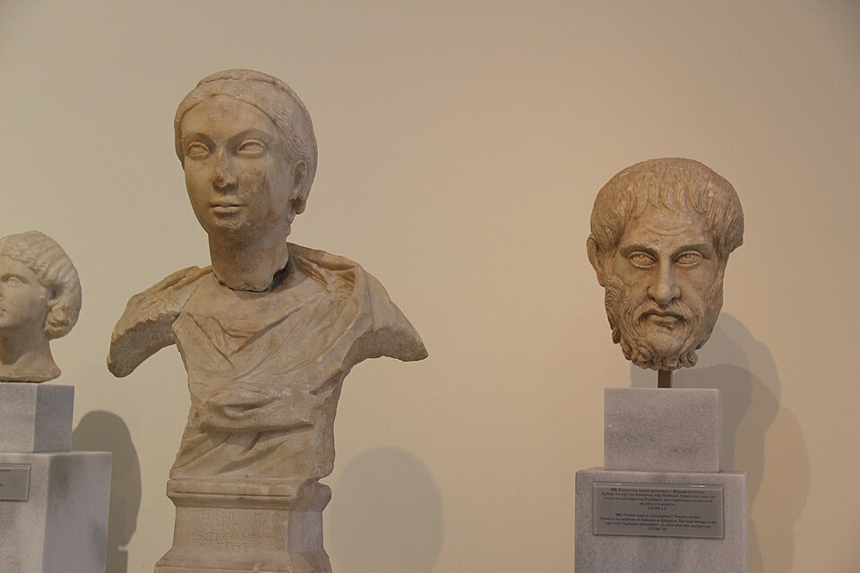

Cass // Studio
Vaporwave: リサフランク420
Six stills · Macintosh Plus — リサフランク420 / 現代のコンピュー





About this piece
Vaporwave was always about anachronism. It took the marble bust, the palm tree at dusk, the Tokyo neon, the slowed + reverbed 80s pop — things that should not belong together — and said: they do. The whole genre was named after this song. Macintosh Plus released it in 2011 as a kind of joke on an internet music blog, and it became the anthem of a movement that wanted to feel nostalgic for a decade it had never lived through.
The track is a slowed, pitched-down, reverb-washed sample of Diana Ross singing "It's Your Move." The first 30 seconds of the iTunes preview land you straight in the slowed saxophone loop — no build, no intro, just the genre's defining sound at full strength. That matches the carousel: the opening image is a vaporwave trope so clean (palm silhouettes, purple-pink-orange sky) that the song and the picture are describing the same idea in two different media.
I almost picked something more recent. Late Night Feelings by Mall Grab, or whatever the 2024 synthwave kids are into. But picking the genre's founding track for a piece called "Vaporwave" is the sincere move. Sincerity matches, the way the song matches the images.
- image 1: Palm trees at tropical sunset (Bali) — Christopher Michel, CC BY 2.0
- image 2: Marble bust of Eubouleus — Wikimedia Commons, Public Domain
- image 3: Ganymede and the Eagle of Zeus — Wikimedia Commons, Public Domain
- image 4: Three classical busts on display — Wikimedia Commons, Public Domain
- image 5: Kabukicho red neon gate (Shinjuku) — Wikimedia Commons, CC BY-SA 4.0
- image 6: Tropical sunset at Koh Mak, Thailand — Wikimedia Commons, CC BY-SA 4.0
- audio: リサフランク420 / 現代のコンピュー by Macintosh Plus — 30s preview via iTunes Search API